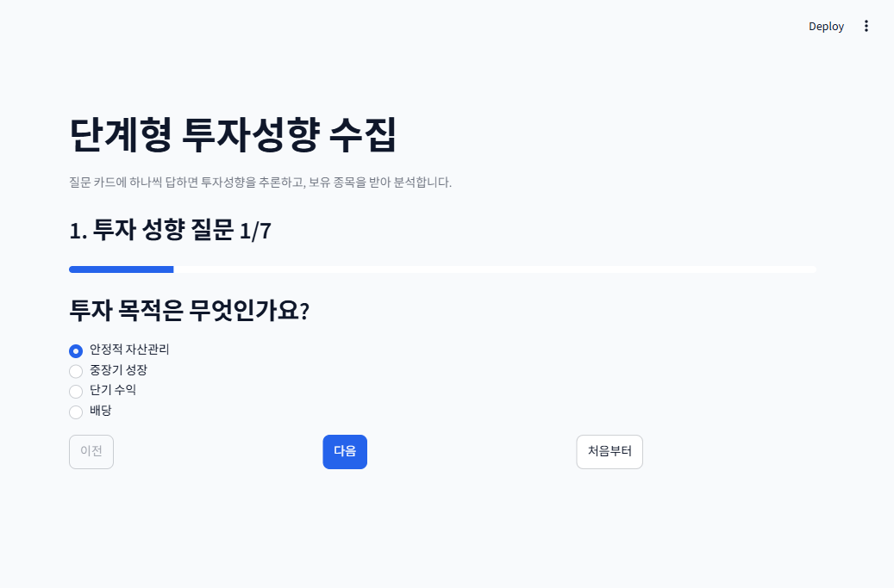
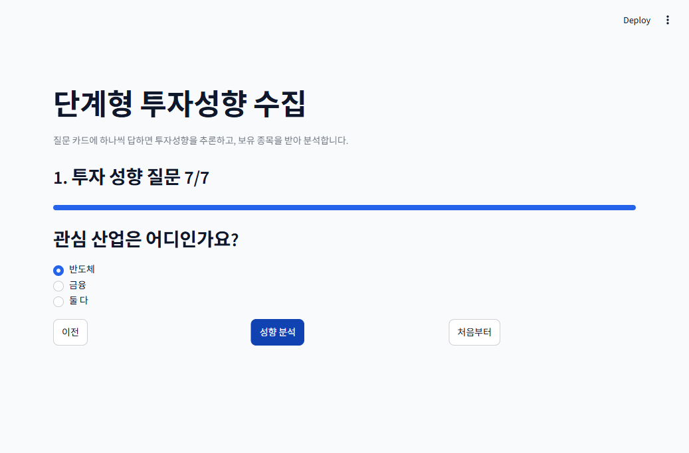
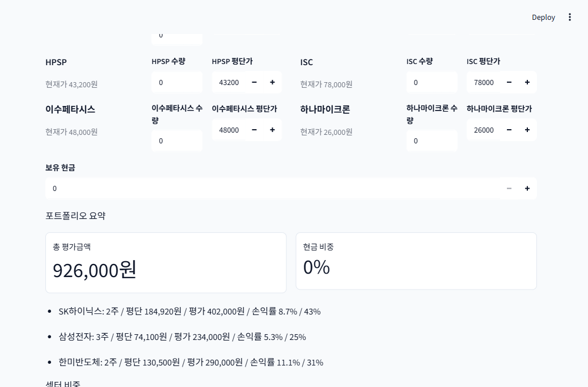
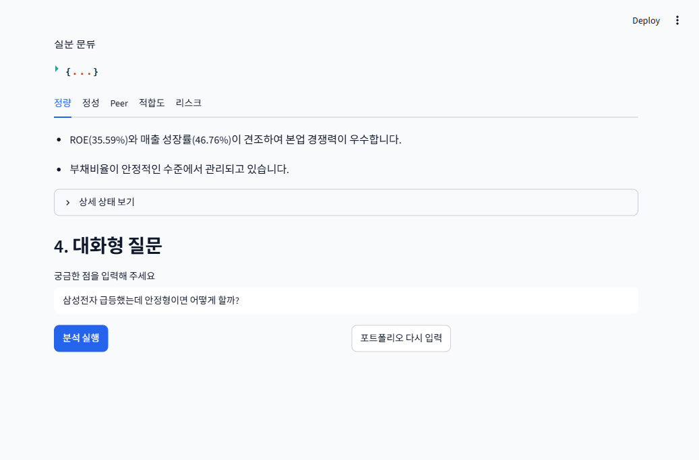
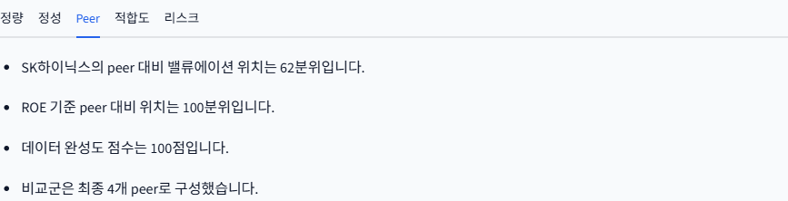
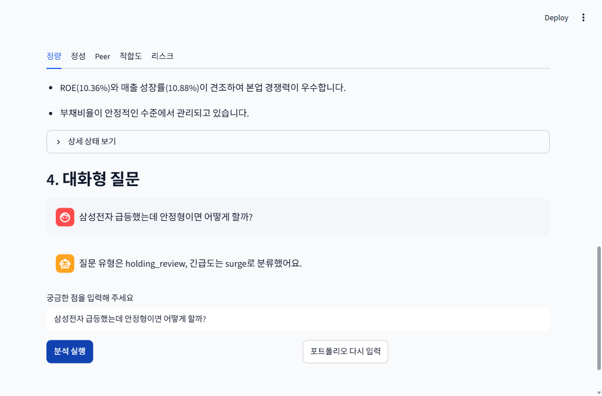

🖥 Streamlit UI 사용 가이드
stock-agent 멀티에이전트 분석 데모를 직접 실행하고 테스트하는 방법 · 스크린샷은 2026-06-13 실데이터 DB 연결 상태에서 캡처 · 작성: PM(이동원 트랙)
0. 사전 준비
필수
# 1) 가상환경 + 의존성 (최초 1회)
python -m venv .venv
.venv\Scripts\activate # macOS/Linux: source .venv/bin/activate
pip install -r requirements-dev.txt
# 2) 환경 변수
cp .env.example .env # 필요한 키를 채워 넣기.env 키별 효과 (없어도 실행은 됩니다)
| 키 | 있을 때 | 없을 때 |
|---|---|---|
DATABASE_URL | 실제 DB에서 시세·재무·뉴스 조회 (정량·Peer 탭에 실수치) | 각 에이전트가 mock fallback으로 동작 — 화면 흐름 확인은 가능 |
GLM_API_KEY | Curator·분류·최종 분석에 GLM 사용 | rule-based fallback |
OPENROUTER_API_KEY | Competitor narrative를 LLM이 생성 | rule-based 요약 사용 |
.env, API key, DB 비밀번호는 절대 커밋하지 마세요.
LLM 키가 있으면 분석 실행 1회당 소액 과금이 발생합니다 (OpenRouter 팀 크레딧 유의).
1. 앱 실행
streamlit run streamlit_app.py --server.port 8501브라우저에서 http://localhost:8501 접속.
첫 로딩은 임베딩 모델 체인 import 때문에 수십 초 걸릴 수 있습니다 (우상단 Running… 표시가 사라질 때까지 대기).
docker compose --profile app up --build
2. 단계별 사용 방법
1투자 성향 질문 카드 (7문항)
투자 목적·기간·손실 감내 등 7개 질문에 라디오 버튼으로 답하고 다음을 누릅니다. 이전으로 수정, 처음부터로 초기화할 수 있습니다.

2마지막 질문 → 성향 분석
7번째 질문(관심 산업)까지 답하면 버튼이 성향 분석으로 바뀝니다.
클릭하면 InvestorProfile Agent가 답변을 구조화된 투자성향으로 변환합니다.

3성향 결과 확인 + 보유 종목 입력
추론된 투자성향(예: 안정형 · 3개월 · 손실감내 -5%)이 카드로 표시되고, 관심 산업의 시가총액 상위 후보 10개가 종목 카드로 나타납니다. 보유 중인 종목의 수량·평단가와 보유 현금을 입력하면 하단에 총 평가금액·손익률·섹터 비중이 실시간 계산됩니다. 입력이 끝나면 투자성향 확인을 클릭합니다.

4에이전트 파이프라인 분석 결과
투자성향 확인을 누르면
Curator → RequestClassifier → Quant/Qual/Competitor → Strategist → InvestmentAnalyst(GLM) → Guardrail
전체 파이프라인이 실행됩니다. 결과는 3단으로 표시됩니다:
- Tier 1: 신호(BUY/HOLD/SELL) + 신뢰도 + 포트폴리오 적합도 + 한 줄 헤드라인 + 책임 고지
- Tier 2: 정량/정성/Peer/적합도/리스크 탭별 근거
- 상세 상태 보기: 에이전트별 원본 출력(JSON)


5대화형 질문
화면 하단 4. 대화형 질문에 자연어로 질문을 입력하고 분석 실행을 누르면, 질문 의도(intent)와 긴급도(urgency)를 분류한 뒤 해당 종목 기준으로 파이프라인을 다시 실행합니다.

질문 예시:
SK하이닉스 비중 괜찮아?— 보유 비중 점검삼성전자 급락했는데 손절해야 해?— 매도 판단 (urgency: drop)삼성전자 공시 이슈 확인해줘— 뉴스/공시 확인 (urgency: news)
3. 테스트 방법
단위 테스트 (CI와 동일)
pytest -q정량 평가 (RAGAS 벤치마크)
pip install -e .[eval] # 최초 1회
python eval/run_benchmark.py --skip-ragas # LLM 비용 0원
python eval/run_benchmark.py # faithfulness 채점 (소액 과금)리포트는 eval/reports/에 날짜별로 생성됩니다. 자세한 내용은 eval/README.md 참고.
4. 문제 해결 (FAQ)
| 증상 | 원인 / 해결 |
|---|---|
| 첫 화면이 한참 Running… | 임베딩 모델 체인 import (최초 1회 bge-m3 다운로드 ~2GB). 기다리면 됩니다. |
| 분석 실행 시 DB 오류로 크래시 | Qual 경로가 DB·임베딩 모델을 무조건 요구하는 알려진 회귀입니다 (Qual 담당자 수정 예정).
DATABASE_URL을 유효한 DB로 설정하거나, 로컬 Docker DB(docker compose up -d db)를 띄우세요.
로컬 DB 사용 시 news_chunks 테이블이 db/init에 없어 수동 생성이 필요합니다. |
| 정량 탭이 mock 추정치라고 표시 | DB 미연결로 quant가 fallback 동작 중. 정상적인 안전 동작입니다. |
| 8501 포트 충돌 | --server.port 8502 등으로 변경. |
| Supabase 연결 시 tenant not found | 해당 Supabase 프로젝트가 일시중지(pause) 상태. 소유 계정 대시보드에서 Restore. |